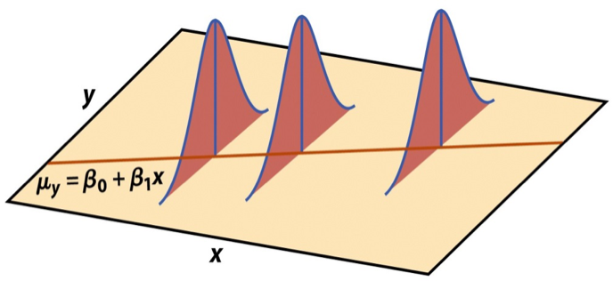
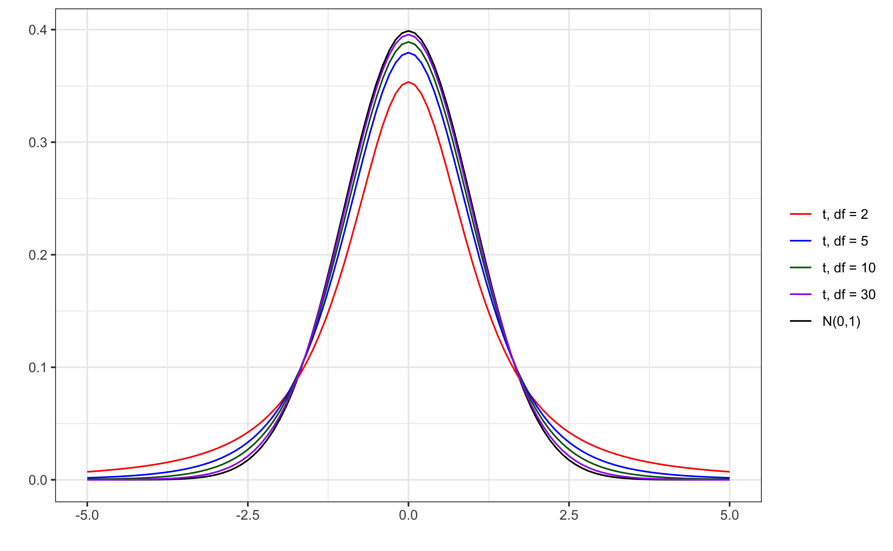

# load packages
library(tidyverse)
library(tidymodels)
library(knitr)
library(kableExtra)
library(patchwork)
# set default theme in ggplot2
ggplot2::theme_set(ggplot2::theme_bw())Inference for regression
Hypothesis tests
Announcements
HW 02 due TODAY at 11:59pm
Project proposal due Tuesday, September 29 at 11:59pm (on GitHub)
HW 03 due Thursday, October 1 at 11:59pm
- Released later today
Statistics experience due November 24
Exam 01 resources
Exam 01: October 6 in-class
- Exam 01 practice (see menu on course website)
- Math rules (will be provided on exam)
- Lecture recordings (see menu on course website)
- Prepare readings (see course schedule)
- Lecture notes
- AEs
- Lab and HW assignments
Topics
- Hypothesis tests for a coefficient \(\beta_j\)
Computing setup
Data: NCAA Football expenditures
Today’s data come from Equity in Athletics Data Analysis and includes information about sports expenditures and revenues for colleges and universities in the United States. This data set was featured in a March 2022 Tidy Tuesday.
We will focus on the 2019 - 2020 season expenditures on football for institutions in the NCAA - Division 1 FBS. The variables are :
total_exp_m: Total expenditures on football in the 2019 - 2020 academic year (in millions USD)enrollment_th: Total student enrollment in the 2019 - 2020 academic year (in thousands)type: institution type (Public or Private)
football <- read_csv("data/ncaa-football-exp.csv")Regression model
exp_fit <- lm(total_exp_m ~ enrollment_th + type, data = football)
tidy(exp_fit) |>
kable(digits = 3)| term | estimate | std.error | statistic | p.value |
|---|---|---|---|---|
| (Intercept) | 19.332 | 2.984 | 6.478 | 0 |
| enrollment_th | 0.780 | 0.110 | 7.074 | 0 |
| typePublic | -13.226 | 3.153 | -4.195 | 0 |
Assumptions for regression
\[ \mathbf{y}|\mathbf{X} \sim N(\mathbf{X}\boldsymbol{\beta}, \sigma^2\mathbf{I}) \]

- Linearity: There is a linear relationship between the response and predictor variables.
- Constant Variance: The variability about the least squares line is generally constant.
- Normality: The distribution of the residuals is approximately normal.
- Independence: The residuals are independent from one another.
Estimating \(\sigma^2\)
Once we fit the model, we can use the residuals to estimate \(\sigma^2\)
The estimated value \(\hat{\sigma}^2\) is needed for hypothesis testing and constructing confidence intervals for regression
\[ \hat{\sigma}^2 = \frac{SSR}{n - p - 1} = \frac{\mathbf{e}^\mathsf{T}\mathbf{e}}{n-p-1} \]
- The regression standard error \(\hat{\sigma}\) is a measure of the average distance between the observations and regression line
\[ \hat{\sigma} = \sqrt{\frac{SSR}{n - p - 1}} = \sqrt{\frac{\mathbf{e}^\mathsf{T}\mathbf{e}}{n - p - 1}} \]
Sampling distribution of \(\hat{\beta}\)
A sampling distribution is the probability distribution of a statistic for a large number of random samples of size \(n\) from a population
The sampling distribution of \(\hat{\boldsymbol{\beta}}\) is the probability distribution of the estimated coefficients if we repeatedly took samples of size \(n\) and fit the regression model
\[ \hat{\boldsymbol{\beta}} \sim N(\boldsymbol{\beta}, \sigma^2(\mathbf{X}^\mathsf{T}\mathbf{X})^{-1}) \]
. . .
The estimated coefficients \(\hat{\boldsymbol{\beta}}\) are normally distributed with
\[ E(\hat{\boldsymbol{\beta}}) = \boldsymbol{\beta} \hspace{10mm} Var(\hat{\boldsymbol{\beta}}) = \sigma^2(\mathbf{X}^\mathsf{T}\mathbf{X})^{-1} \]
Sampling distribution of \(\hat{\beta}_j\)
\[ \hat{\boldsymbol{\beta}} \sim N(\boldsymbol{\beta}, \sigma^2(\mathbf{X}^\mathsf{T}\mathbf{X})^{-1}) \]
Let \(\mathbf{C} = (\mathbf{X}^\mathsf{T}\mathbf{X})^{-1}\). Then, for each coefficient \(\hat{\beta}_j\),
\(E(\hat{\beta}_j) = \boldsymbol{\beta}_j\), the \(j^{th}\) element of \(\boldsymbol{\beta}\)
\(Var(\hat{\beta}_j) = \sigma^2C_{jj}\)
\(Cov(\hat{\beta}_i, \hat{\beta}_j) = \sigma^2C_{ij}\)
Application exercise
Variance-covariance matrix for coefficients
X <- model.matrix(total_exp_m ~ enrollment_th + type,
data = football)
sigma_sq <- glance(exp_fit)$sigma^2
var_beta <- sigma_sq * solve(t(X) %*% X)
var_beta (Intercept) enrollment_th typePublic
(Intercept) 8.9054556 -0.13323338 -6.0899556
enrollment_th -0.1332334 0.01216984 -0.1239408
typePublic -6.0899556 -0.12394079 9.9388370Standard error of coefficients
| term | estimate | std.error | statistic | p.value |
|---|---|---|---|---|
| (Intercept) | 19.332 | 2.984 | 6.478 | 0 |
| enrollment_th | 0.780 | 0.110 | 7.074 | 0 |
| typePublic | -13.226 | 3.153 | -4.195 | 0 |
sqrt(diag(var_beta)) (Intercept) enrollment_th typePublic
2.984201 0.110317 3.152592 Hypothesis test for \(\beta_j\)
Hypothesis testing as a US court trial
Null hypothesis, \(H_0\) : Defendant is innocent
Alternative hypothesis, \(H_a\) : Defendant is guilty
Present the evidence: Collect data
Judge the evidence: “Could these data plausibly have happened by chance if the null hypothesis were true?”
Yes: Fail to reject \(H_0\)
No: Reject \(H_0\)
Steps for a hypothesis test
State the null and alternative hypotheses.
Compute a test statistic.
Compute the p-value.
State the conclusion.
Hypothesis test for \(\beta_j\): Hypotheses
We will generally test the hypotheses:
\[ \begin{aligned} &H_0: \beta_j = 0 \\ &H_a: \beta_j \neq 0 \end{aligned} \]
State these hypotheses in words.
Hypothesis test for \(\beta_j\): Test statistic
Test statistic: Number of standard errors the estimate is away from the null
\[ \text{Test Statistic} = \frac{\text{Estimate - Null}}{\text{Standard error}} \\ \]
. . .
If \(\sigma^2\) was known, the test statistic would be
\[Z = \frac{\hat{\beta}_j - 0}{SE_{\hat{\beta}_j}} ~ = ~\frac{\hat{\beta}_j - 0}{\sqrt{\sigma^2 C_{jj}}} ~\sim ~ N(0, 1) \]
Hypothesis test for \(\beta_j\): Test statistic
In practice, \(\sigma^2\) is not known, so we use \(\hat{\sigma}^2\) to estimate \(SE_{\hat{\beta}_j}\)
\[T = \frac{\hat{\beta}_j - 0}{SE_{\hat{\beta}_j}} ~ = ~\frac{\hat{\beta}_j - 0}{\sqrt{\hat{\sigma}^2 C_{jj}}} ~\sim ~ t_{n-p-1} \]
. . .
\(T\) follows a \(t\) distribution with \(n - p -1\) degrees of freedom.
We need to account for the additional variability introduced by computing \(SE_{\hat{\beta}_j}\) using an estimated value instead of a fixed, known value
t vs. N(0,1)

Your turn
Which test statistic indicates the strongest evidence against the null hypothesis?
Hypothesis test for \(\beta_j\): p-value
The p-value measures how likely it is to see results at least as extreme as the observed result, given the null hypothesis is true.
\[ \text{p-value} = P(|t| > |T|), \]
calculated from a \(t\) distribution with \(n- p - 1\) degrees of freedom
. . .
Why do we take into account the high and low ends of the distribution to define “extreme” for this test?
Understanding the p-value
| Magnitude of p-value | Interpretation |
|---|---|
| p-value < 0.01 | strong evidence against \(H_0\) |
| 0.01 < p-value < 0.05 | moderate evidence against \(H_0\) |
| 0.05 < p-value < 0.1 | weak evidence against \(H_0\) |
| p-value > 0.1 | effectively no evidence against \(H_0\) |
These are general guidelines. The strength of evidence depends on the context of the problem.
Hypothesis test for \(\beta_j\): Conclusion
There are two parts to the conclusion
Make a conclusion by comparing the p-value to a predetermined decision-making threshold called the significance level ( \(\alpha\) level)
If \(\text{p-value} < \alpha\): Reject \(H_0\)
If \(\text{p-value} \geq \alpha\): Fail to reject \(H_0\)
State the conclusion in the context of the data
Your turn
| term | estimate | std.error | statistic | p.value |
|---|---|---|---|---|
| (Intercept) | 19.332 | 2.984 | 6.478 | 0 |
| enrollment_th | 0.780 | 0.110 | 7.074 | 0 |
| typePublic | -13.226 | 3.153 | -4.195 | 0 |
We wish to test whether there is evidence of a linear relationship between enrollment and football expenditure after accounting for the type of institution.
- State the null and alternative hypotheses in words and mathematical notation.
- State how the test statistic is computed from the other values in the output. Interpret the test statistic in the context of the data.
- State the distribution used to compute the p-value and interpret it in the context of the data.
- State your conclusion in the context of the data.
Recap
- Conducted a hypothesis test for a coefficient \(\beta_j\)
Before next class
HW 02 due today at 11:59pm
Complete Lecture 11 prepare